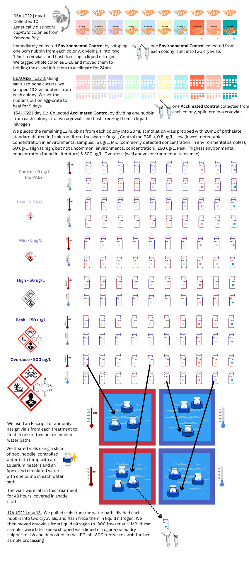

Monday Feb 6th 2023
Agenda
Introduction - 5 mins
Discuss Committee Agreements - 10 mins
Research Overview - 15 mins
Thesis Direction - 10 mins
Feedback - 20 mins
Committee Agreements first draft
- Supervisory Committee Chair - Dr. Jacqueline L Padilla-Gamiño, jpgamino@uw.edu
- Committee UW SAFS Core Faculty - Dr. Steven B Roberts, sr320@uw.edu
- Committee Member - Dr. Jesse R Zaneveld, zaneveld@uw.edu
- Graduate Student, (Master’s Thesis) - Sarah S Tanja, stanja@uw.edu
These agreements will help facilitate our mentor/mentee expectations in a living document that will be collaboratively updated throughout Sarah’s Master’s work*
From the 2022-23 SAFS graduate student guide:
“The Chair and at least one-half of the total membership must be members of the Graduate Faculty. A minimum of two committee members must also be SAFS Core faculty. The supervisory committee will provide expertise and depth in areas related to the student’s research. The student should rely primarily on the Supervisory Committee Chair and secondarily on the other committee members for professional guidance.”
Our Mentee/Mentor Expectations are:
We will work with open, honest, and kind communication
We will prioritize doing fewer projects well over many small projects poorly
We acknowledge that we may be working flexibly or remotely from different time-zones
Sarah will organize her research with
GitHubto foster open science- tips on writing & editing a manuscript with multiple reviewers using
GitHub
- tips on writing & editing a manuscript with multiple reviewers using
Sarah will organize all committee meetings, and be responsible for reaching out to individual committee members for help when she needs it
Sarah is on a learning curve and will need to reach out to the committee for guidance; at the same time it is her responsibility to own the project and learn the analyses she is conducting
Sarah will maintain an open lab notebook and post (at least weekly) to it
The committee will meet quarterly
Sarah’s progress toward a M.S. will look like:
| Milestone | Expected | Completed |
|---|---|---|
| Form Committee | [AU22] 16DEC22 | [WI23] 05JAN23 |
| Submit Plan of Study | [AU22] 16DEC22 | [WI23] 05JAN23 |
| Submit Thesis Proposal | [AU22] 16DEC22 | [WI23] |
| End-of-Program Meeting with GPA | [AU23] 01NOV23 | |
| Submit Thesis Draft | [WI24] 31JAN24 | |
| Request Final Exam | [WI24] 31JAN24 | |
| Request Master’s Degree | [WI24] 31JAN24 | |
| Final Exam: Thesis Seminar + Oral Exam | [SP24] 05APR24 | |
| Submit Master’s Thesis | [SP24] 31MAY24 | |
| Commencement | 08JUN24 |
Completed Coursework
| Qtr | Course | Credits | Grade |
|---|---|---|---|
| WI21 | OCEAN 518-Scientific Writing | 2.0 | CR |
| SU21 | FHL 446-Marine Botany | 9.0 | 4.0 |
| AU21 | FISH 511-Topics: Evol&Ecol Plastics Seminar | 2.0 | CR |
| AU21 | FISH 522-Hot Topics in AFS | 2.0 | CR |
| AU21 | FISH 552-Intro R Programming | 2.0 | CR |
| AU21 | FISH 553-ADV R Programming | 2.0 | CR |
| AU21 | QSCI 482-Statistical Inference in Ecol | 5.0 | 3.8 |
| WI22 | FISH 521-Research Proposal Writing | 4.0 | 3.7 |
| WI22 | FISH 700-Masters Thesis | 3.0 | CR |
| WI22 | OCEAN 531-Marine Phyto Biogeochem | 3.0 | 3.9 |
| WI22 | FISH 700-Masters Thesis | 5.0 | CR |
| WI22 | FISH 541-Environmental Physiology | 5.0 | 4.0 |
| SU22 | FISH 700-Masters Thesis | 10.0 | CR |
| AU22 | FISH 561-Resource Economics & Policy | 4.0 | 4.0 |
| AU22 | SMEA 500-Human Dimensions of Global Change | 3.0 | 4.0 |
| AU22 | SMEA 521-Climate Change Governance | 3.0 | 3.7 |
Research Overview
Motivation
Broadly, my interest in research is motivated by a desire for a healthy world. This is embodied by the ‘one health’ approach, which recognizes the connections between the health of people, animals, and the environment.
 infographic sourced from Morrison et al. 2022
infographic sourced from Morrison et al. 2022
More about Sarah’s background, research interests & motivations can be found in the About page.
Research Topic Background
The goal of my Master’s thesis research is to gain insight into multiple-stressor interactions of warming oceans and plastic pollution on reef-building corals.
Under a CMIP6 climate scenario, it is forecasted that more than 75% of coral reefs will experience yearly severe bleaching before 2070 due to thermal stress. However, hope for resilient corals exists. In a prolonged marine heatwave event on Kiritimati Atoll, the largest coral atoll in the world, 100% of the corals near chronic anthropogenic disturbances died, but in areas that were not already stressed, 90% of corals died. The 10% that survived after bleaching are hypothesized to have recovered due to lower baseline levels of stress and better water quality compared to corals near chronic anthropogenic stressors like pollution and overfishing (Claar et al. 2020).
Corals are threatened by global stressors, strategies for reducing local stressors may give corals an edge on survival
While coral coverage has declined since the 50s, petroleum-derived plastic production and subsequent environmental plastic pollution have rapidly increased. An estimated 8 million tons of plastic and their associated additives end up in the oceans every year, with unknown impacts to important coastal coral reef ecosystems. Plastics are emerging environmental pollutants of growing concern for coral reefs, and are the source of a suite of environmental contaminants and persistent organic pollutants posing unknown risks to human and ecosystem health (Rochman et al. 2019). Plastics are non-biodegradable, persisting in the environment for centuries. UV radiation and mechanical weathering cause them to become brittle and fragment into microplastics <5mm, and nanoplastics <1mm. As plastics weather mechanically, they also weather chemically by leaching additives not covalently bonded to the plastic polymer resins (Hahladakis et al. 2018).
 Figure from Macleod et al. 2021
Figure from Macleod et al. 2021
The most common plastic additives are a group of chemicals called plasticizers, also known as phthalates or phthalate acid esters (PAE). They are commonly added to PVC to increase flexibility and durability. Phthalates are known to mimic or interfere with hormones that control developmental, reproductive, and immune response in both humans and animals (Maqbool et al. 2016). Despite the presence of phthalates in 95% of tested coral samples (Montano et al. 2020), little is known about how phthalates interfere with coral physiology and reproduction. Previous research shows that plastic leachates experimentally added to plants, bacteria, and algae impair growth, reduce photosynthesis, and shift microbial communities in lab studies (Capolupo et al. 2020; O’Brien et al. 2022; Tetu et al. 2019).
** Plastic pollution, and associated PAE pollution,
Marine heatwaves, plastic manufacturing, and coastal ocean plastic pollution are all predicted to increase (MacLeod et al. 2021; Oliver et al. 2021).
As discussed in Claar et al. (2020), the success of coral recovery after bleaching will depend on levels of chronic anthropogenic stressors like pollution.
I propose to conduct a series of studies that expose coral gametes and coral colonies to the multiple stressors of phthalate pollution and ocean warming, and subsequently measure the physiological responses, holobiont community structure, and gene expression between treatments. {: .notice–info}
This proposed research aligns with the mission of the School of Aquatic and Fisheries Sciences at the University of Washington, which is to conduct multidisciplinary research and education in order to understand, conserve, and manage marine ecosystems.
REFERENCES
Capolupo, Marco, Lisbet Sørensen, Kongalage Don Ranil Jayasena, Andy M. Booth, and Elena Fabbri. 2020. “Chemical Composition and Ecotoxicity of Plastic and Car Tire Rubber Leachates to Aquatic Organisms.” Water Research 169 (February): 115270. https://doi.org/10.1016/j.watres.2019.115270.
Claar, Danielle C., Samuel Starko, Kristina L. Tietjen, Hannah E. Epstein, Ross Cunning, Kim M. Cobb, Andrew C. Baker, Ruth D. Gates, and Julia K. Baum. 2020. “Dynamic Symbioses Reveal Pathways to Coral Survival Through Prolonged Heatwaves.” Nature Communications 11 (1): 6097. https://doi.org/10.1038/s41467-020-19169-y.
Hahladakis, John N., Costas A. Velis, Roland Weber, Eleni Iacovidou, and Phil Purnell. 2018. “An Overview of Chemical Additives Present in Plastics: Migration, Release, Fate and Environmental Impact During Their Use, Disposal and Recycling.” Journal of Hazardous Materials 344 (February): 179–99. https://doi.org/10.1016/j.jhazmat.2017.10.014.
MacLeod, Matthew, Hans Peter H. Arp, Mine B. Tekman, and Annika Jahnke. 2021. “The Global Threat from Plastic Pollution.” Science 373 (6550): 61–65. https://doi.org/10.1126/science.abg5433.
Maqbool, Faheem, Sara Mostafalou, Haji Bahadar, and Mohammad Abdollahi. 2016. “Review of Endocrine Disorders Associated with Environmental Toxicants and Possible Involved Mechanisms.” Life Sciences 145 (January): 265–73. https://doi.org/10.1016/j.lfs.2015.10.022.
Marangoni, Laura FB, Eric Beraud, and Christine Ferrier-Pagès. 2021. “Polystyrene Nanoplastics Impair the Photosynthetic Capacities of Symbiodiniaceae and Promote Coral Bleaching.” Science of The Total Environment, 152136.
Montano, Simone, Davide Seveso, Davide Maggioni, Paolo Galli, Stefano Corsarini, and Francesco Saliu. 2020. “Spatial Variability of Phthalates Contamination in the Reef-Building Corals Porites Lutea, Pocillopora Verrucosa and Pavona Varians.” Marine Pollution Bulletin 155 (June): 111117. https://doi.org/10.1016/j.marpolbul.2020.111117.
O’Brien, Anna M., Tiago F. Lins, Yamin Yang, Megan E. Frederickson, David Sinton, and Chelsea M. Rochman. 2022. “Microplastics Shift Impacts of Climate Change on a Plant- Microbe Mutualism: Temperature, CO2, and Tire Wear Particles.” Environmental Research 203 (January): 111727. https://doi.org/10.1016/j.envres.2021.111727.
Oliver, Eric C. J., Jessica A. Benthuysen, Sofia Darmaraki, Markus G. Donat, Alistair J. Hobday, Neil J. Holbrook, Robert W. Schlegel, and Alex Sen Gupta. 2021. “Marine Heatwaves.” Annual Review of Marine Science 13 (1): 313–42. https://doi.org/10.1146/annurev-marine-032720-095144.
Rochman, Chelsea M., Cole Brookson, Jacqueline Bikker, Natasha Djuric, Arielle Earn, Kennedy Bucci, Samantha Athey, et al. 2019. “Rethinking Microplastics as a Diverse Contaminant Suite.” Environmental Toxicology and Chemistry 38 (4): 703–11. https://doi.org/10.1002/etc.4371.
Tetu, Sasha G., Indrani Sarker, Verena Schrameyer, Russell Pickford, Liam D. H. Elbourne, Lisa R. Moore, and Ian T. Paulsen. 2019. “Plastic Leachates Impair Growth and Oxygen Production in Prochlorococcus, the Ocean’s Most Abundant Photosynthetic Bacteria.” Communications Biology 2 (May): 184. https://doi.org/10.1038/s42003-019-0410-x.
Main Questions
Does phthalate (PAE) pollution affect M. capitata coral development?
What are the single and combined effects of temperature and PAE on M. capitata coral physiological response (transcriptome)?
What are the single and combined effects of temperature and PAE on the M. capitata coral microbiome?
‘Pilot’ Experiments
PAE-DEVO | Phthalates stunt development in M. capitata coral embryos
I exposed M. capitata egg-sperm bundles to increasing concentrations of phthalates to assess toxic effects on the development of coral embryos.
 add caption
add caption
I used the EPA 506 phthalate esters mix 1, which is a 1mL vial that includes the 6 most common phthalates added to consumer products each at a concentration of 500\(\mu\)g / mL, (500,000\(\mu\)g/L) .
The mix contained the following 6 phthalates:
- Benzyl butyl phthalate (BBP)
- detected in 92.7% of 165 water samples
- Bis(2-ethylhexyl) adipate (DEHA)
- Bis(2-ethylhexyl) phthalate (DEHP)
- listed on EPA’s Toxics Release Inventory (TRI)
- regulated under the Safe Drinking Water Act. The highest concentration allowed, the maximum contaminant level (MCL), is 0.006 mg/L , (6\(\mu\)g/L) in ‘safe’ drinking water
- Dibutyl pthalate (DBP)
- listed on EPA’s Toxics Release Inventory (TRI)
- Diethyl phthalate (DEP)
- Dimethyl phthalate (DMP)
Concentrations of phthalates in environmental sea water samples reported in the literature:
| Study Area | BBP | DEHA | DEHP | DBP | DEP | DMP | \(\sum\)PAE | Reference |
|---|---|---|---|---|---|---|---|---|
| Review | 0.5 - 10 \(\mu\)g/L | Lynch et al 2022 | ||||||
| Tunisia | <LOD-168\(\mu\)g/L | <LOD-30.5\(\mu\)g/L | <LOD-17.0\(\mu\)g/L | Jebara et al 2021 | ||||
| Mediterranean Coastal Spain | 0.0021-0.304\(\mu\)g/L | 0.031-0.617\(\mu\)g/L | 0.024-0.483\(\mu\)g/L | 0.0028 - 0.142 \(\mu\)g/L | Sanchez-Avila et al 2012 |
REFERENCES
Lynch, Jennifer M., Katrina Knauer, and Katherine R. Shaw. 2022. “Plastic Additives in the Ocean.” In Plastics and the Ocean, edited by Anthony L. Andrady, 1st ed., 43–76. Wiley. https://doi.org/10.1002/9781119768432.ch2.
Jebara, Amel, Ambrogina Albergamo, Rossana Rando, Angela Giorgia Potortì, Vincenzo Lo Turco, Hedi Ben Mansour, and Giuseppa Di Bella. 2021. “Phthalates and Non-Phthalate Plasticizers in Tunisian Marine Samples: Occurrence, Spatial Distribution and Seasonal Variation.” Marine Pollution Bulletin 163 (February): 111967. https://doi.org/10.1016/j.marpolbul.2021.111967.
Sánchez-Avila, Juan, Romà Tauler, and Silvia Lacorte. 2012. “Organic Micropollutants in Coastal Waters from NW Mediterranean Sea: Sources Distribution and Potential Risk.” Environment International 46 (October): 50–62. https://doi.org/10.1016/j.envint.2012.04.013.
Based on these environmental measurements, I chose to dose the coral gametes at the following concentrations:
- 0\(\mu\)g/L : control
- 0.5\(\mu\)g/L (0.0005\(\mu\)g/mL): LOD
- 5\(\mu\)g/L (0.005\(\mu\)g/mL) : would be considered acceptable drinking water
- 50\(\mu\)g/L (0.05\(\mu\)g/mL) : common environmentally relevant value
- 150\(\mu\)g/L (0.150\(\mu\)g/mL): max environmental relevance (Jebara et al. 2021, in Tunisia @ 168\(\mu\)g/L)
After dropping bundle-bundle crosses in each prepped 20mL vial treatment, I allowed the bundles to break apart, releasing sperm, and undergo fertilization.
At 4 hours post fertilization, I photographed all the eggs, zygotes, or embryos in each vial using a dissecting scope to determine what proportion of the bundle-bundle cross successfully made it to initial cleavage.
 M. capitata eggs at 4hpf (hours post fertilization), images taken using an Amscope camera attached to a dissecting scope
M. capitata eggs at 4hpf (hours post fertilization), images taken using an Amscope camera attached to a dissecting scope
Inital results from an n=3 show the hypothesized ‘non-monotonic’ response pattern
 Graph showing initial results from PAE-DEVO pilot study. Of interest is the non-monotonic response (very low PAE concentrations significantly reduced proportion of eggs making it to initial cleavage, and were not significantly different compared to very high concentrations of PAE)
Graph showing initial results from PAE-DEVO pilot study. Of interest is the non-monotonic response (very low PAE concentrations significantly reduced proportion of eggs making it to initial cleavage, and were not significantly different compared to very high concentrations of PAE)
In Summary: the PAE-DEVO experiment resulted in a total of 15 samples, with an n=3, and showed significant differences between the control and all treatment groups. This pilot study may be a candidate for publication as a note in a low-impact factor journal like {: .notice–success}
Limitations: Sample size is low and study replication is difficult because it relies on access to intact M. capitata egg-sperm bundles, and the use of EPA 506 phthalate esters mix 1, which may pose harm to researcher health. If I were to repeat this experiment I would want to make my own leachate out of a common plastic consumer product, similar to the methods used by Tetu et al. 2019. Though this would be safer, it would not provide insight into the actual concentration of PAEs in the treatment. {: .notice–warning}
Note: I presented this pilot study in a 5-min lighting talk during the AU’22 SAFS Graduate Student Symposium {: .notice–info}
PAE-TEMP | M. capitata Acute Phthalate & Thermal Stress Exposure
graphical methods, JPG suggested simplifying diagram
In Summary: the PAE-TEMP experiment resulted in a total of 130 samples, with an n=10, that were flash-frozen in liquid nitrogen and can be used for DNA/RNA studies. {: .notice–success}
Limitations: In order to ensure the phthalate concentration was controlled in each treatment, the 20mL scintillation vials were a closed, ‘mesocosm’, and the corals did not receive water changes during the short 48hr exposure. Because of this, I expect we will see degradation between the environmental and experimental control samples. This study can’t account for the fact that corals in Kaneohe Bay may already be exposed to chronic low-levels of PAE pollution, so we can’t say our control baseline is ‘zero PAE exposure’. Replication may be difficult because it relies on the use of EPA 506 phthalate esters mix 1, which may pose harm to researcher health. {: .notice–warning}
3. Thesis Direction
Of the two pilot experiments, the M. capitata Acute Phthalate & Thermal Stress Exposure (PAE-TEMP) provides the most samples and potential to move toward publishable manuscripts.
Chapter 1 - Microbiome
Acute phthalate and thermal stress exposure effects on M. capitata coral microbiome
- submit as a manuscript to Environmental Pollution (IF 9.988) - author list (Tanja, SS; Roberts, SB; Zaneveld, JR; Padilla-Gamiño, JL)
Hypothesis: Are there any microbes that may be more sensible to temp, PAE or the combination of both? - “elevated temperatures make corals more vulnerable to opportunistic bacteria”-Zaneveld et al. 2016 - “Overall, coral microbiome diversity and composition varied with host species, local disturbance and heat stress, but not always as predicted.”-McDevitt-Irwin et al 2019 - “Both heat stress exposures induced the significant structural reorganization of coral-associated bacteria, with bacterial diversity and community heterogeneity significantly increasing with the temperature treatment.”- Zhu et al. 2023
Methods:
- Quick DNA/RNA Miniprep Plus Kit
- 50 preps $438.90 , 10 preps $106.70
- 16S rRNA amplicon sequencing send subsample of control vs. overdose to look for initial differences
- UW Northwest Genomics Center $__/sample
- Azenta
- Univ. of Texas
- Mr. DNA Lab $90/sample for 5k sequences per assay
- QIIME pipeline
Chapter 2 - Transcriptome
Acute phthalate and thermal stress exposure effects on M. capitata coral transcriptome - submit as a manuscript to Environmental Pollution (IF 9.988) - author list (Tanja, SS; Roberts, SB; Zaneveld, JR; Padilla-Gamiño, JL)
Hypothesis: “What genes do you expect to be upregulated or downregulated by temp, PAE, and temp and PAE? and why?” - “Endocrine-like signaling in corals” , book chapter by Ann Tarrant - “components of the transcriptome were significantly upregulated within 90 min and after a temperature increase of +2 degrees C. The developmental transcription factor, Kruppel-like factor 7, was highly expressed within 60 min, and stress-related transcription factors such as Elk-3 were highly expressed starting at 240 min. The sets of genes enriched for early transcriptional response to heat stress included heat shock proteins, small GTPases, and proteasome genes. Retrovirus-related Pol polyproteins from transposons were significantly expressed throughout the whole experiment.” - Traylor-Knowles et al. 2017 - “Overall, redox regulation and metabolite transport are key components of the coral animal thermal stress phenome.” - Williams et al. 2021
Methods: - Quick DNA/RNA Miniprep Plus Kit - 50 preps $438.90 , 10 preps $106.70
- RNAseq: send subsample of control vs. overdose to look for initial differences
- UW Northwest Genomics Center $200/sample RobertsLab Get Seq Quote - coral samples issue
- Azenta 50% off promotion $140/sample
- Univ. of Texas
- Mr. DNA Lab
- Linux pipeline?
Timeline

5. Feedback
Q. Is the PAE + Temp multiple stressor study rigorous enough to be turned into two manuscripts? A. potentially, it will depend on what we see in the data. It will be enough for two thesis chapters.
Q. Which sequencing strategy would be best suited to this project? - Where have you sent samples for sequencing services in the past? - What are reasonable sequencing costs per sample?
Q. I need support/resources to learn about: - requesting quotes for sequencing (sequencing platform, # of sequences, # of bp, read-length/assay-length) - library preparation
> “sequencing libraries are pools of DNA fragments containing adapter sequences compatible with a specific sequencing platform and indexing barcodes for individual sample identification. The main library preparation methods are [ligation-based library preparation](https://www.idtdna.com/pages/technology/next-generation-sequencing/library-preparation/ligation-based-library-prep) tagmentation-based library preparation, and [amplicon library preparation](https://www.idtdna.com/pages/technology/next-generation-sequencing/dna-sequencing/targeted-sequencing/amplicon-sequencing). The specific protocol you choose depends on your sequencing platform and downstream analysis.”
- large file storage (Hyak super computer at SAFS?) *got stuck at this step when working with microbiome data last Winter*
- [RNAseq pipeline](https://www.azenta.com/blog/quick-start-guide-rna-seq-data-analysis)General comments from committee: just jump in and get going with DNA/RNA extraction, this needs to be done ASAP